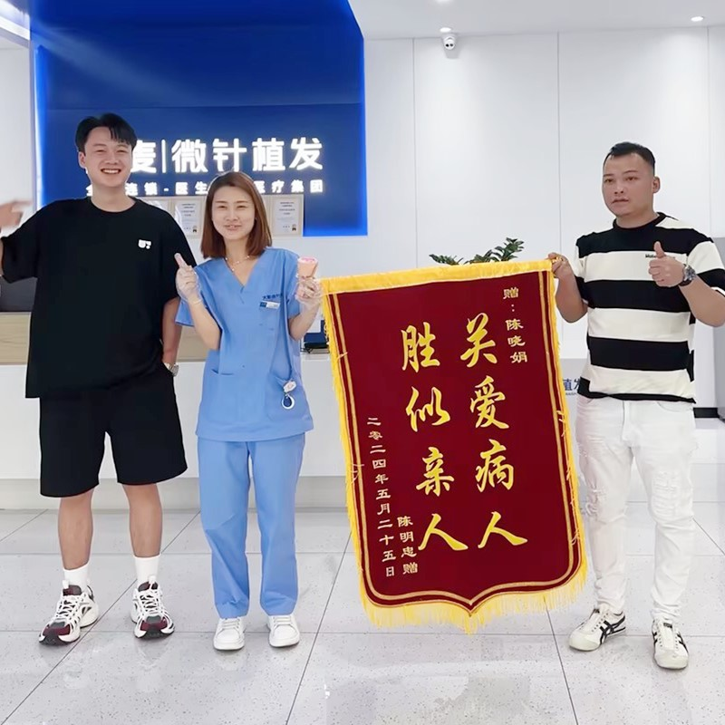

微創毛囊單位提取，效果自然，恢復時間短

FUE（Follicular Unit Extraction，毛囊單位提取）是目前最先進、最受歡迎的植髮技術。與傳統的FUT方法不同，FUE使用微型工具（0.8-1.0毫米）從供髮區逐一提取毛囊單位。這種方法不需要條狀切口，因此不留可見疤痕。每個提取的毛囊單位隨後被精確植入接受區，打造完美自然的結果。這是一項高度精密的外科手術，需要極高的技能與豐富的經驗。
誰是FUE植髮手術的最佳候選人？
專業步驟，打造完美效果
與您討論並設計自然且適合您臉型的髮際線
供髮區與接受區進行局部麻醉，確保無痛
使用0.8mm微針工具逐一提取健康毛囊單位
專業團隊分離並準備每個毛囊單位以進行植入
根據自然生長方向與角度精確植入毛囊
專業包紮，提供完整術後指導與追蹤服務
為什麼FUE是目前最先進的植髮技術
無需條狀切口或縫合。微小的提取點會在幾天內癒合，不留可見疤痕。即使是短髮也完全看不出來。
大多數患者7天內即可恢復正常工作與社交活動。提取區約10天癒合。移植的頭髮3個月後開始生長，12-18個月達到最終效果。
我們的醫師根據自然頭髮生長模式進行植入，確保完美的角度、方向和密度。即使是專業人士也無法察覺您是做過植髮手術。
業界領導者，實績證明
自2006年起，微針植髮技術的先驅與領導者
遍布全國各大城市，均維持同一高標準
創新的微針與植入筆技術，帶來卓越效果
獲得全球患者信賴，帶來改變人生的效果
為國際患者提供全程英語支援
最先進的設施與嚴格的安全規範，讓您安心
看看我們患者獲得的驚人改變


與滿意患者們的美好時刻

對我們的FUE效果感到滿意

患者慶祝成功的FUE植髮

感恩的患者分享他們的正面體驗

患者在手術後感覺良好

患者自豪地展示他們的新髮際線

患者對自然效果感到驚喜

患者與我們的醫療團隊分享喜悅

患者對植髮效果感到滿意
聽聽來自全球滿意患者的評價
在Google搜尋FUE植髮推薦找到大麥！微創植髮效果超好，幾乎沒有疼痛，恢復也很快，頭髮看起來非常自然！
FUE植髮費用透明合理！無痕植髮評價真的很高，微創植髮效果讓我超滿意，完全看不出做過手術！
無痕植髮評價超好！FUE植髮推薦給所有人！即使剪很短的頭髮也完全看不出來，微創植髮技術很先進！
FUE植髮推薦！微創植髮效果超出預期，手術當天很輕鬆，醫師團隊很專業，現在頭髮長得很自然！
FUE植髮費用公道又有效果！無痕植髮評價很高，微創植髮讓我很安心，效果自然到朋友都以為只是換了造型！
在Bing查了FUE植髮推薦和無痕植髮評價，最後選擇大麥！微創植髮效果超好，過程舒適，價格合理！
體驗我們現代化且舒適的設施

我們最先進的設施

在我們的高級休息區放鬆

無菌且先進的設備

私密且專業

舒適的術後恢復空間

溫馨的入口大堂
解答有關FUE植髮的常見疑問
聯絡我們獲取免費諮詢
15810155700
+86 13730143529
hairtransplant@qq.com